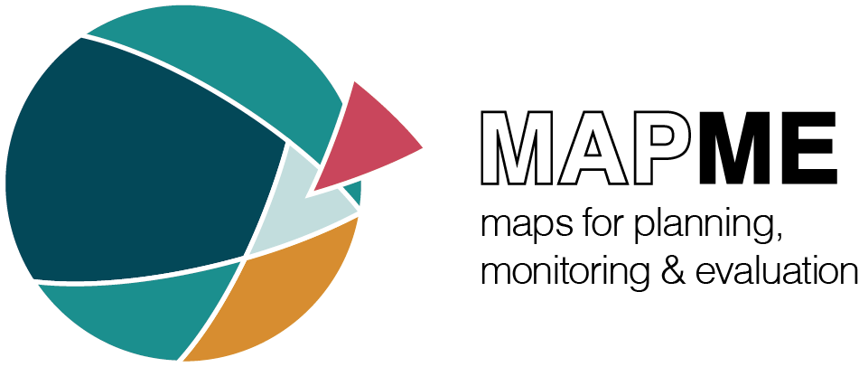

FAO, and IHE Delft. 2020.
“Water Accounting in the Jordan River Basin.” FAO WaPOR Water Accounting Reports. https://doi.org/
https://doi.org/10.4060/ca9181en.
Karger, Dirk Nikolaus, Olaf Conrad, Jürgen Böhner, Tobias Kawohl, Holger Kreft, Rodrigo Wilber Soria-Auza, Niklaus E. Zimmermann, H. Peter Linder, and Michael Kessler. 2021.
“Climatologies at High Resolution for the Earth’s Land Surface Areas.” EnviDat. https://doi.org/
http://dx.doi.org/10.16904/envidat.228.
Saab, David. 2003.
“Conceptualizing Space: Mapping Schemas as Meaningful Representations.” PhD thesis.
https://doi.org/10.13140/2.1.3030.1767.
Silva-Perez, Cristian, Armando Marino, and Iain Cameron. 2022.
“Learning-Based Tracking of Crop Biophysical Variables and Key Dates Estimation from Fusion of SAR and Optical Data.” IEEE Journal of Selected Topics in Applied Earth Observations and Remote Sensing 15: 7444–57.
https://doi.org/10.1109/JSTARS.2022.3203248.
Tariq, Aqil, Jianguo Yan, Alexandre S. Gagnon, Mobushir Riaz Khan, and Faisal Mumtaz. 2022.
“Mapping of Cropland, Cropping Patterns and Crop Types by Combining Optical Remote Sensing Images with Decision Tree Classifier and Random Forest.” Geo-Spatial Information Science 0 (0): 1–19.
https://doi.org/10.1080/10095020.2022.2100287.
Vicente-Serrano, Sergio M., Santiago Beguería, and Juan I. López-Moreno. 2010.
“A Multiscalar Drought Index Sensitive to Global Warming: The Standardized Precipitation Evapotranspiration Index.” Journal of Climate 23 (7): 1696–1718. https://doi.org/
https://doi.org/10.1175/2009JCLI2909.1.
